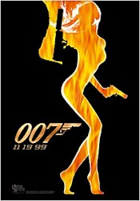

Contents | Features | Reviews | Books | Archives | Store |
 |
|
| Movie Credits | Buy It! |
The World is Not Enough
Review by
Gregory Avery
Posted 19 November 1999
|  |
Directed by Michael Apted Starring
Pierce Brosnan, Screenplay
by Neal Purvis, |
At
one point in Bond 19, a.k.a. "The World is Not Enough," a nefarious
character makes an offer to James Bond, telling him that, in return, the world
could be his. "The world is not enough," Bond (Pierce Brosnan)
replies. Adding, "Family motto."
In
Ian Fleming's novel On Her Majesty's Secret Service, Bond has a phony
family crest made up for him as part of the espionage case he is working on. Its
motto: "The world is not enough."
When
we last saw James Bond -- at the movies, that is -- he was jumping over rooftops
while riding on the back of a motorcycle being driven by Michelle Yeoh; facing
off against an evil world media mogul played by Jonathan Pryce (whirling,
razor-sharp blades figure in the new movie, too); and sharing just enough screen
time with Teri Hatcher to justify her top billing. Brosnan appeared to be,
maybe, settling into the role all right, although I still wish he had done so
ten years earlier. And the bang-bang-boom-boom looked an awful lot like what you
could see in twenty other mediocre action movies.
The
World is Not Enough opens with Bond walking into a Swiss bank branch located
within sight of the spectacular, otherworldly new Frank Gehry-designed
Guggenheim Museum in Bilbao, Spain, and making an escape from an upper-story
window by means of a pair of suspenders; an explosive devise which is
ingeniously set-off within the confines of MI6 headquarters, in London; and a
subsequent pursuit where Bond tries to capture a sniper (played by the very
beautiful actress Maria Grazia Cucinotta, who shows that she's one very tough
cookie) during what starts out as a high speed boat chase that leads past the
Houses of Parliament on the Thames and winds up in a hot air balloon over the
Millennium Dome. And that's before we even get to the opening title sequence and
the music group Garbage performs the theme song.
The
filmmakers have said that they wanted to do a new Bond, a fresher Bond, a
non-formulaic Bond, a non-Die Hard Bond (which many had felt he had, if
not become, then was in danger of becoming in the last film), a Bond that is
ready to enter the twenty-first century. One that wasn't "blasting away at
people with a machine gun" as in Tomorrow Never Dies, but who,
according to co-screenwriter Neal Purvis, "should make a difference by
picking up his Walther P.P.K. and firing one shot." There would be more
character development, even a "Hitchcockian" feel to the film, and
Pierce Brosnan concurred that he wanted to play a Bond whose character was
"more of a flesh-and-blood man."
So,
this time 007 is up against a renegade former intelligence man, nicknamed Renard
(Robert Carlyle), whom 009 attempted to assassinate with a gunshot to the head,
and Renard still has the bullet lodged in there to prove it. (Carlyle brings a
genuinely chilling quality to his scenes.) There is also Elektra King (Sophie
Marceau, apparently fully recovered from her terrifying expository jaunt at the
Cannes Film Festival last May), providing the nominal romantic interest as well
as some perverse psychological plot twists relating to a prior kidnapping
episode. The "Bond Babe," here, is Denise Richards, who turns out to do a
perfectly fine job playing a nuclear physicist named Christmas Jones ("No
'Christmas' jokes! I've heard them all!" she says immediately after
introducing herself), even though, next to Pierce Brosnan's forty-something
Bond, she can't help but look underaged. (I understand that, as I write this,
Richards' appearance in the film, if not Richards herself, is being thrashed in
the press. All I can say is: Give the girl a break, guys. Plus, eight words:
Britt Ekland, The Man With the Golden Gun.)
So,
how shipworthy do the Bond films look as they glide into the next century? (Bond
twenty is already in negotiations). There's been some reshuffling of the old
elements, and some new ones added. Judi Dench makes a smashing M, Samantha Bond
plays a younger Moneypenny who is just as appealing as Lois Maxwell ever was,
and Robbie Coltrane makes a return appearance as Zukovsky, a former K.G.B. man
turned entrepreneur. (His number-two man is played by the U.K. rap musician
Goldie, replete with gold caps over his upper teeth.) And John Cleese looks
promising as the new protégé of Q (Desmond Llewelyn), Bond's all-purpose
apparel and accessory provider. (Bond asks Q whether his new man will be named
R. Q doesn't give a response to this. However, Cleese is not listed in the
film's credits, and Desmond Llewelyn, who has appeared in all the Bond films and
is given reverential, even loving treatment, here, has recently said that he'll
continue to play the part "as long as they'll have me and God won't."
Longtime members of the Commanders Club will also spot a portrait of the late
Bernard Lee hanging behind M's office desk.)
The
opening sequence is both truly thrilling, and gives us a Bond who turns out to
be not invulnerable. But once Brosnan and Marceau get involved in a chase
sequence on skis, there's the feeling that you've seen it all before. The film
globe-hops from Spain to London, Scotland, Azerbaijan, Istanbul, and Kazakstan.
There are last-minute escapes from explosions, bombs to be defused, submarines
sent to the bottom of the sea. The villain's plans involve a (yawn)
monopolization of the world's oil supply for the next century. Bond even gets
tortured by a fiendish Turkish device that looks like a more elaborate version
of what Le Chiffe used on the secret agent in the novel Casino Royale,
replete with undertones of sexual sadism.
Each
Bond film has risen or fallen on the style of the actor playing the role.
Fleming himself saw him as a blank, thus his choice of the dullest name
imaginable (in the early 1950s) for him; in turn, Bond, in Fleming's subsequent
novels, inadvertently mirrored Fleming's own concerns about himself, or his
fantasizations about how he saw himself to be. (Fleming, who worked in British
Intelligence during the Second World War and used the initial of his superior
for the name of 007's superior, died as a result of refusing to recognize his
failing health. He met the producers of the film version of Dr. No, and
their choice of actor to play Bond, but never saw the finished film.)
Roger
Moore brought a cold, even repellant, sense of condescension and smirkiness to
the part. Timothy Dalton had a broodiness tempered by attempts to be personable
or sensitive on occasion. Only Sean Connery managed to bring the right
combination of daredeviling, the debonair, and the slight, cruel streak that
Fleming envisioned the character as having.
The
Connery films still seem to be the most popular because they didn't have
anything previous to top. Nothing has yet come close to the film versions of From
Russia With Love and Goldfinger, and the series became repetitive and
hollowed-out by lowbrow self-parody in the Seventies, before the producers
attempted a "get back to basics" approach at the beginning of the
1980s.
Pierce
Brosnan has had the unenviable task of trying to restore credibility to a part
that has been elevated to pop culture icon, revered, imitated, satirized,
ripped-off, trashed outright, re-venerated, then imitated, idolized and
satirized all over again. Brosnan has the high style part down (in one scene, he
orders his usual martini, is confronted by a thug, disarms him, pins his tie to
the surface of a bar top with a knife, then takes a first sip of his
freshly-delivered martini, all seemingly in one move), but when he has to drop
some dismal, one-liner comment, he seems too intelligent and cultivated to go
about saying such stupid things. His putting the moves on a female doctor
(played by Serena Scott Thomas, Kristin's sister) by saying they should
"skirt around" the situation seems like something two kids would get
up to after sneaking around to the back of the school gymnasium. The sophomoric
aspect turns wearisome, as if the movie had a tin can tied to its tail that it
can't seem to get rid of, yet. (But whom are we kidding? Bond has always been an
adolescent fantasy; that's why we keep returning to him, again and again.)
John Cleese responds to one such quip, during an early scene. "Ah, yes," he remarks, "the famous James Bond wit. Or, at least half of it." For one brief moment, the film flares up in an unexpected way, but then succumbs to Cleese's veritable outlook.
Contents | Features | Reviews
| Books | Archives | Store
Copyright © 1999 by Nitrate Productions, Inc. All
Rights Reserved.